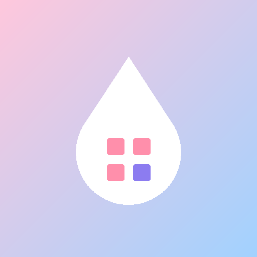

WordArt
Find words. Fill colors. Relax.
WordArt is a cozy Android coloring book where every color is earned by solving an endless word search.
Each word you find pours paint into a color's bucket — then tap the matching spaces to watch your picture
come to life. Themed books, a fresh daily page, trophies, and a gallery to replay and share your art.